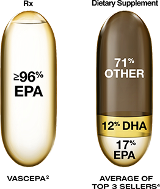
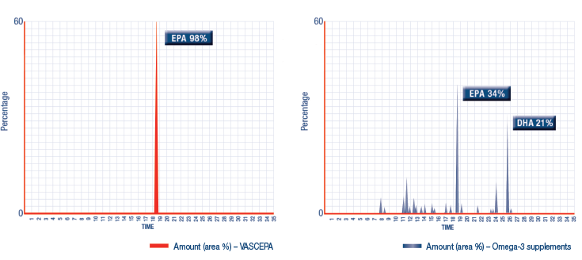

Supplements Contain EPA, DHA, Omega‑6, and Other Ingredients That Are Unknown
In the pivotal MARINE trial, VASCEPA 4 g/d increased plasma EPA levels 5-fold from baseline to end of study—at baseline, mean EPA plasma levels were 61.2 µg/mL; at the end of 12 weeks of treatment, mean EPA plasma levels were 326.7 µg/mL.1

- The increase in LDL-C caused by DHA in some patients may be avoided by using EPA-only VASCEPA. There may be other ingredients within fish oil supplements that are considered nonbeneficial or potentially harmful
- DHA has been correlated with increases in LDL-C, while omega-6 may have proinflammatory properties3
- VASCEPA is obtained naturally from wild, deepwater Pacific Ocean fish predominantly harvested off the South American coast from the families of Engraulidae (anchovies), Carangidae (jacks, pompanos, scads), Clupeidae (sardines, menhadens, herrings), Osmeridae (smelts), Scombridae (mackerels, tunas), and Ammodytidae (sand lances)4
DHA, docosahexaenoic acid; LDL-C, low-density lipoprotein cholesterol; EPA, eicosapentaenoic acid; MARINE, Multi-center plAcebo-controlled, Randomized, double-blINd, 12-week study with an open-label Extension.
References: 1. Weintraub HS. Overview of prescription omega-3 fatty acid products for hypertriglyceridemia. Postgrad Med. 2014;126(7):7-18. 2. Bays HE, Ballantyne CM, Kastelein JJ, Isaacsohn JL, Braeckman RA, Soni PN. Eicosapentaenoic acid ethyl ester (AMR101) therapy in patients with very high triglyceride levels (from the Multi-center, plAcebo-controlled, Randomized, double-blINd, 12-week study with an open-label Extension [MARINE] trial). AM J Cardiol. 2011;108(5):682-690. 3. Bays H. Rationale for prescription omega-3-acid ethyl ester therapy for hypertriglyceridemia: a primer for clinicians. Drugs Today (Barc). 2008;44(3):205-246. 4. Data on file. Amarin Pharma Inc., 2012.
Vascepa Compared With An Omega-3 Supplement
Chromatogram showing the purity of VASCEPA (icosapent ethyl)3
Chromatogram showing the mixed composition of a fish oil supplement3

Important Safety Information for VASCEPA
The most common reported adverse reaction (incidence >2% and greater than placebo) was arthralgia (2.3% VASCEPA, 1.0% placebo).